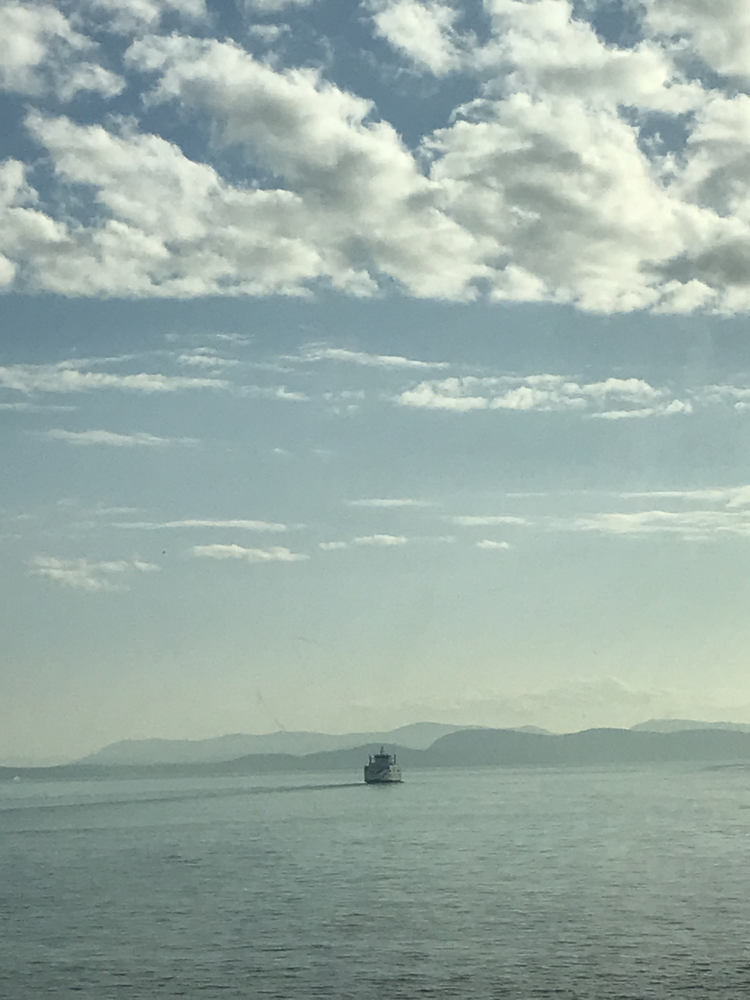
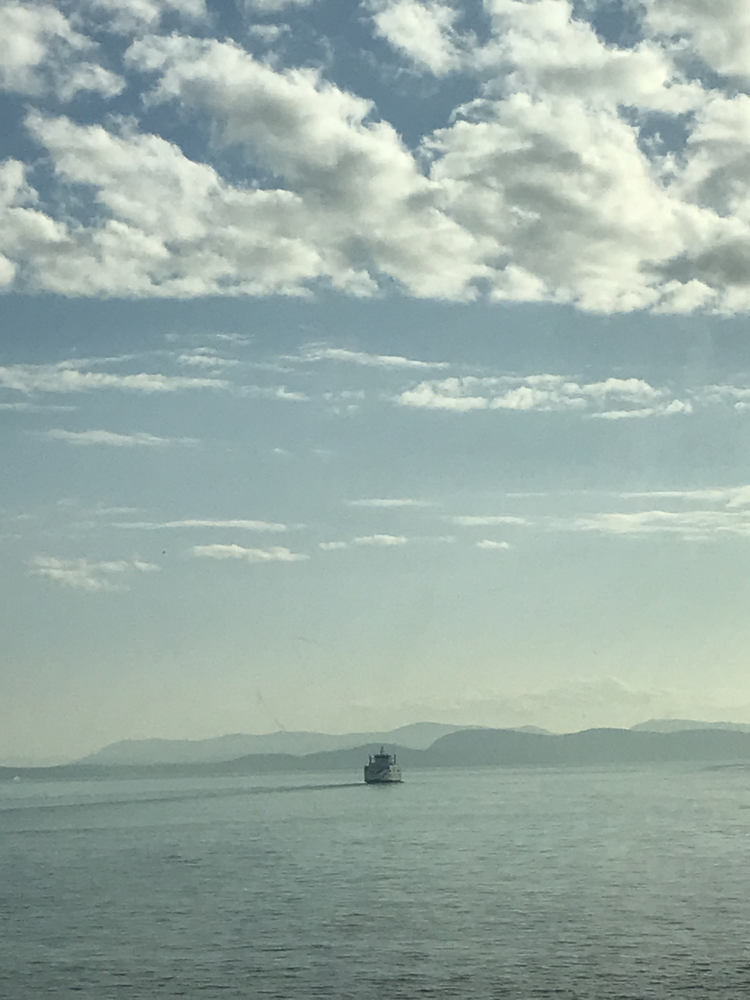
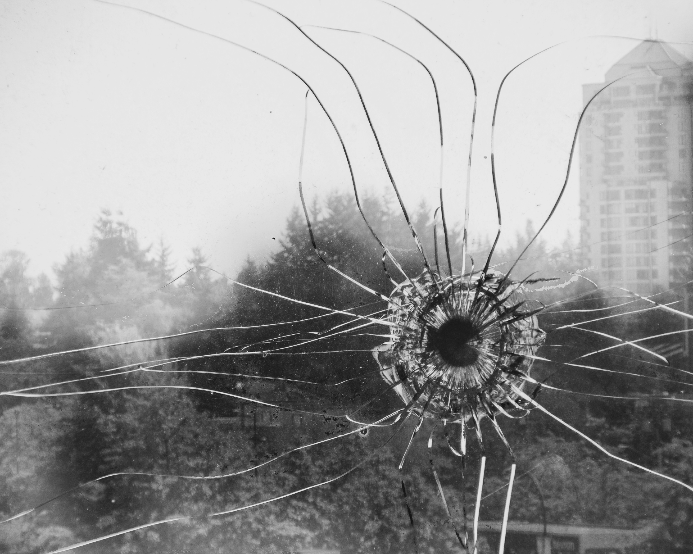
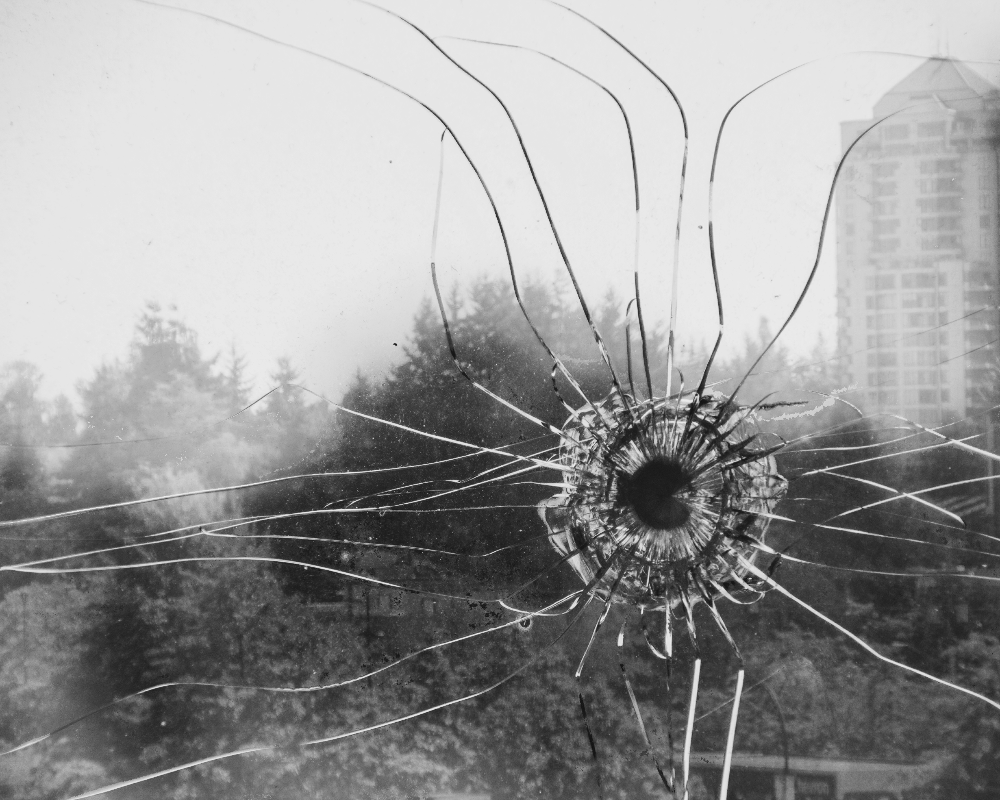

Index For Style Guide
Basic Style Guide Elements
- Headings
- Paragraphs
- Numbered Lists
- Unordered Lists
- Buttons
- Label
- Input Field
- Radio Button
- Image
- In-Text Link
- Navigation Link
- Image Gallery
- Contact Form
- Background Image
Colour Scheme
Biography
I am a passionate digital design student, artist, sketcher and photographer. I love experimenting and growing my skills in various different mediums, from programming to graphic layouts to video editing to web design! My professional and personal passions overlap quite a bit: I enjoy hiking in the outdoors taking photographs and listening to the sounds of nature, sketching a variety of different subjects from cartoons to more intricate patterns, and writing stories and ideating different stories and characters. I am hardworking, energetic, and colourful, and always wish to represent my personality in the work I do.
Overall, I am open to a wide variety of different professions as my skillset is very adaptable and easily molded to any task I need to undergo. I can easily hold up the backbone of a project or be the front runner of the projects leadership role. I am most drawn to a career in photography. I believe with my technical knowledge of the inner workings of cameras, editing photos and setting up equipment needed for a shoot, combined with my design knowledge of colour, layouts and harmony would lend very well in this type of career. I really wish to put myself out there and be a worker than any person, group, or company can rely on.
First Project Process Analysis
Out of all the courses I've taken, it surprised me how much I enjoyed photography. Even after finishing my projects for the course Digital Photography, I still find myself passionately taking pictures of everything I can. Even if my image quality isn't the greatest, as my main camera is an iPhone 7, I enjoy seeing what I can create and document.
The final project for this course was for ourselves to select 20 of our best images we took during the semester, and present them in a final portfolio. However, not only did these images have to be first accepted by our own peers, but by our professor as well. With over 100+ images taken this would seem easy, but as Malcolm Gladwell said, in order to stand out among others is "ten thousand hours of practice is required" (Outliers: The Story of Success, pg 40). For myself not even hitting 50 hours of practice shooting and editing, my work was quite mediocre.
In order to elevate my work up to the level that was needed, I reviewed the images I had currently produced and asked for feedback from my peers about what was working and what needed to be revised. I also reviewed the various photography concepts we were taught as well as images that embodied those concepts perfectly, and why those images were more effective than mine. Doing this review process made my final images more refined and polished than they were earlier on in the course.
Another challenge was making sure my portfolio had a large variety. While not specified for this project, as an artist I take pride in having a wide variety of polished skills over having one polished skill. While I have many images of textures, close-up shots, birds and landscapes, I knew I had to branch out and experiment more. This lead to some of my more interesting images involving more heavy manipulation, different types of lenses and even more odd methods of picture taking such as taking images with scanners, and many more techniques that were a bit more unconventional. This strategy was a success as while not all my images were perfect, all of them were unique and I feel showcased my personality as a photographer quite well.
In the end, this is an experience I treasure and wish to do many more projects similar to this in the future.
Second Project Process Analysis
In the fall 2018 semester at Simon Fraser University, my course in film tasked myself and my group with producing a short film. Our group designed the setting, script, recruited the actors, reserved the sets for shooting and, for my task, organizing and transporting the productions equipment.
The main challenge I encountered with providing my group with the equipment needed was how much in general was needed. Transporting lights, camera, tripods, microphones and audio recorders, reflectors and more was not a feasible feat alone. Not only that, but due to other groups also needing this equipment, I had to stay on my toes keeping our equipment booked and available for our team members to use. In order to tackle these issues, I made myself a schedule for when to book the equipment, when to return it, and when to schedule transportation to the film sets. This helped me keep my thoughts organized, as well as add to the list of any new equipment we needed as the production went along. I asked my team members for assistance when transporting the equipment as they had access to larger vehicles that I did not have access to. Overall, keeping a clear schedule and communicating well with my group lead us to having no issues whatsoever on the equipment end of the project, and filming days went very smooth as a result.
BASIC STYLE GUIDE ELEMENTS
HEADINGS
I'm a H1 Heading
I'm a H2 Heading
I'm a H3 Heading
I'm a H4 Heading
PARAGRAPHS
This is what a generic paragraph would look like
This is what a paragraph with bolded text would look like.
This is what a paragraph with italicized text would look like
NUMBERED LISTS
- Make sure the most important piece of information is at the top!
- Information that enhances first piece
- And other little bonuses to follow
BULLET POINT LISTS
- To keep information organized that doesn't need to be in a specific order
- Also used to organize a large group of similar objects
- Makes it easier to read!
LABEL
Used in front of input tags or buttons to add context to the other element.
INPUT BOX
Used for the customer to type in information
RADIO BUTTONS
IMAGES
General layout for all images (size, border, etc)
IN-TEXT LINK
If a link is in the middle of a paragraph, it will be shown like this and will take you to another page
IMAGE GALLERY

 

 


CONTACT FORM
Background Image